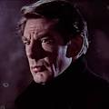
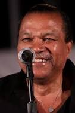
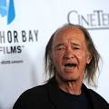
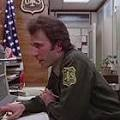
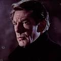
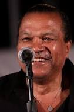
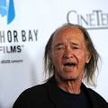
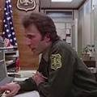

Джек Ніколсон Джокер
Джек Ніколсон Джокер  «Бетмен» (англ. Batman) — американський фільм Тіма Бертона 1989 року, що базується на однойменній серії коміксів про супергероя Бетмена.
Сюжет
У Брюса Вейна (Майкла Кітона) в дитячому віці, на очах, злочинці вбили батьків, за що хлопець клянеться помститися. Як прикриття у своїй вічній боротьбі зі злом та зі злочинцями він використовує костюм кажана і, відповідно, псевдонім «Бетмен» (англ. Batman).
Уже роками Ґотем контролює кримінальний бос Карл Ґріссом (Джек Паланс), незважаючи на всі зусилля новообраного окружного прокурора Гарві Дента (Біллі Ді Вільямс) і комісара поліції Джеймса Гордона (Пет Гінгл). Доповідач Александер Нокс (Роберт Вул) і фото-журналістка Вікі Вейл (Кім Бейсінгер) починають власне журналістське розслідування про кажана, який наводив страх на злочинців, — проте якого вважали і найпершим злочинцем.
Вікі і Александер були присутні на прийомі у Брюса Вейна, на якому Вікі почала симпатизувати Брюсу. Тієї ж ночі Джек Нап'е (Джек Ніколсон), права рука Карла Ґріссома, відправляється в рейд на хімічний завод. Після того, як поліція прибула щоб заарештувати його, він розуміє — Ґріссом його зрадив. На завод також прибув Бетмен, у якого Джек вистрілив, але куля відбилася від його рукавички і попала в обличчя Джеку. Оговтавшись від болю він через передрягу потрапляє в бочку з невідомим хімічним розчином: він виживає, тільки його волосся і шкіра втратили колір. Після невдалої хірургічної спроби відновити собі обличчя, він стає схожий на клоуна і починає називати себе «Джокером».
«Бетмен» (англ. Batman) — американський фільм Тіма Бертона 1989 року, що базується на однойменній серії коміксів про супергероя Бетмена.
Сюжет
У Брюса Вейна (Майкла Кітона) в дитячому віці, на очах, злочинці вбили батьків, за що хлопець клянеться помститися. Як прикриття у своїй вічній боротьбі зі злом та зі злочинцями він використовує костюм кажана і, відповідно, псевдонім «Бетмен» (англ. Batman).
Уже роками Ґотем контролює кримінальний бос Карл Ґріссом (Джек Паланс), незважаючи на всі зусилля новообраного окружного прокурора Гарві Дента (Біллі Ді Вільямс) і комісара поліції Джеймса Гордона (Пет Гінгл). Доповідач Александер Нокс (Роберт Вул) і фото-журналістка Вікі Вейл (Кім Бейсінгер) починають власне журналістське розслідування про кажана, який наводив страх на злочинців, — проте якого вважали і найпершим злочинцем.
Вікі і Александер були присутні на прийомі у Брюса Вейна, на якому Вікі почала симпатизувати Брюсу. Тієї ж ночі Джек Нап'е (Джек Ніколсон), права рука Карла Ґріссома, відправляється в рейд на хімічний завод. Після того, як поліція прибула щоб заарештувати його, він розуміє — Ґріссом його зрадив. На завод також прибув Бетмен, у якого Джек вистрілив, але куля відбилася від його рукавички і попала в обличчя Джеку. Оговтавшись від болю він через передрягу потрапляє в бочку з невідомим хімічним розчином: він виживає, тільки його волосся і шкіра втратили колір. Після невдалої хірургічної спроби відновити собі обличчя, він стає схожий на клоуна і починає називати себе «Джокером».
✵✵✵✵✵✵✵✵✵✵✵✵✵✵✵ Акторський склад ✵✵✵✵✵✵✵✵✵✵✵✵✵✵✵
Майкл Кітон Бетмен Джек Ніколсон Джокер
 Кім Бейсінгер Вікі Вейл
Джек Пеланс Карл Гріссом
Пет Хінгл -комісар Джеймс Гордон
Роберт Вул Олександр Нокс
 Майкл Гоф Альфред Пеніворт
Джері Голл Алісія Гант
 Біллі Ді Вільямс Двуликий
 Трейсі Волтер злочинець Боб
Лі Уолес мер Борг
Вільям Хуткінс лейт. Макс Екхардт
 Девід Бакст Томас Вейн
Шерон Гольм Марта Вейн
Кім Бейсінгер Вікі Вейл
Джек Пеланс Карл Гріссом
Пет Хінгл -комісар Джеймс Гордон
Роберт Вул Олександр Нокс
 Майкл Гоф Альфред Пеніворт
Джері Голл Алісія Гант
 Біллі Ді Вільямс Двуликий
 Трейсі Волтер злочинець Боб
Лі Уолес мер Борг
Вільям Хуткінс лейт. Макс Екхардт
 Девід Бакст Томас Вейн
Шерон Гольм Марта Вейн
✵✵✵✵✵✵✵✵✵✵✵✵✵✵✵ ...та інші актори... ✵✵✵✵✵✵✵✵✵✵✵✵✵✵✵